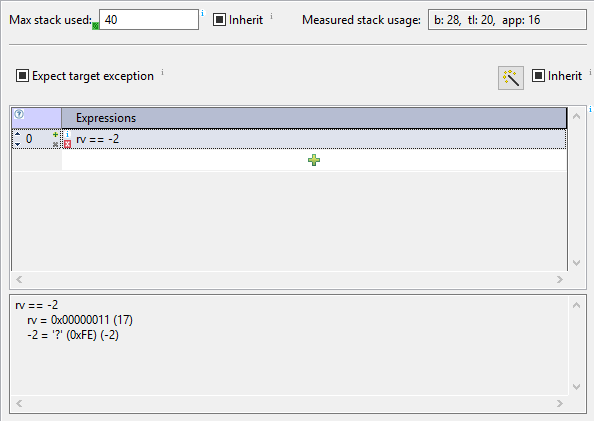

Test results
After test execution status of each test is marked with green or
red overlay icons. Status icons are set also on each section of test
case, which has results set. Note that not all sections
define constraints on test results. Only the following pages
define such constraints:
- Pre-conditions
Expressions in this sections are evaluated before the target
is started. They can be used to verify initial conditions for
the test.
- Expected
This section cen define stack usage contraints and
expressions.
Expressions defined in table Expressions must evaluate to
non-zero value. If this is not true, expression is marked with
red icon. When we click an expression, values of sub-expressions
are shown below the table Expected, as shown below.

We can see not only that the results of the expression was false,
but also the actual value returned from the function.
Note 1: Hex or Dec mode for values printed can be set either in:
- winIDEA watch window, tool-bar button
'0xF'.
- by appending format specifiers to expression (using
symbols
@@, see tool-tip of the expressions table).
- testIDEA settings in
File | Properties | Evaluator.
Note 2: For floating point values the operator '==' must be used
with caution. To make comparison for equality of floating point values
more convenient, winIDEA uses vague comparison, where values are
considered equal, if their relative difference is less than epsilon.
The default value of epsilon is 1.e-5, but can be customized with
winIDEA option /IDE/Debug.Symbols.Format.VagueFloatPrecision.
Enter this option URL and new epsilon value
in testIDEA section Options. Alternatively this value is
accessible in winIDEA Debug | Debug Options dialog, tab Symbol.
- Stubs
When stubbed function is called, testIDEA can verify
values of variables and run scripts. Expressions and scripts
must be successful for test to pass.
- Test points
Test points can pause test execution anywhere inside the
function. testIDEA can verify values of variables and
run scripts at these locations. Expressions and scripts must
be successful for test to pass.
- Scripts
Scripts also have possibility to report errors to testIDEA.
- Coverage
Coverage section may define minimum amount of coverage for
functions called during test. After test execution the
requirements, which were not satisfied, are marked with red
color.
- Profiler
Profiler section may define execution times and hit counts for
functions called and variables modified during test. After test
execution the requirements, which were not satisfied, are marked
with red color.
- Extension functions
Extension functions can also report errors. In such case red decoration
icons appear next to script function name in the Scripts section.
Test results in the Status view
After the test execution the summary of test results is shown in
the Status view. The first line shows some statistic, while
other lines contain errors, if they occurred.
Example of the Status View without errors:

Example of the Status View with errors:
Tip: To see the test case, which has failed, double click
the error line in the Status view. The corresponding test case will be
selected in the Test tree.
Test reports
(Professional version only)
To save test results for documentation purposes, red marks in GUI
are not very convenient. For this reason we can save test results
to file in several different formats.
iSYSTEM testIDEA can save test results in XML, YAML, CSV,
XLS, or XLSX file formats.
XML format is convenient for usage in other tools, including
viewing in web browsers, because it is widely supported.
YAML format is not so well known, but it
is much more readable and as such convenient for quick overview in
text editor.
CSV (Comma Separated Values) format is also understood by many
other tools, for example it can be imported to rquirements
management tools, such as DOORS.
XLS and XLSX are Excel (old and new) formats.
We can show XML file in web browser with the help of XML
Stylesheet Template. This section describes generating of reports,
while XSLTs are described in section iSYSTEM Test Report Stylesheets
Test report can be saved with the main menu option Test |
Save Test Report .... We get the following dialog:
As usual, description of input fields is given in their
tool-tips.
Note: Internet Explorer does not support document created
with option Embed XSLT/CSS into XML report checked. See
IE 10, XML and embed XSLT for more details.
An example of the generated test report is shown
below. First we can see a table with test configuration
parameters, and a table with test statistic. Tables with results
of each executed test case are following.
Because one test can fail with more than one error, the sum of number
of errors per category can be greater than the number of failed
tests in the statistic table.
Coverage results
Coverage report contains the following results:
- Obj. code all - the number of object code statements in the measured code
- Src. lines all - the number of all source lines in the measured code
- Cond. all - the number of all conditions in the measured code
- CC (Outomes) - condition coverage measured in all
possible outcomes. The number of all possible outcomes is the
number of conditions times 2, because each condition has 2
outomes (true and false). For measured outcomes the following
equation is used:
measured outcomes = cond. false only + cond. true only
+ cond. both ways * 2
- Obj. code executed - expected and measured percentage of
executed statements in object code
- Src. lines executed - expected and measured percentage of
executed source lines
- Conditions any - the number of conditions, which executed
at least once
- Cond. true only - the number of conditions, which
evaluated to true only
- Cond. false only - the number of conditions, which
evaluated to false only
- Conditions both - the number of conditions, which
evaluated both ways (true and false)
Example: